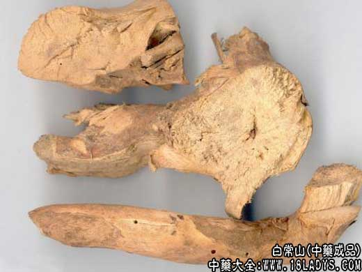
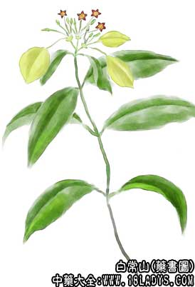

原文出处:本文转载自中药大全网。
原文连接:https://www.daquan.com/post/2420.html
原文连接:https://www.daquan.com/post/2420.html



来源：为茜草科玉叶金花属植物玉叶金花或展枝玉叶金花的根。玉叶金花属全世界约200种，中国约33种。
原植物：玉叶金花，展枝玉叶金花。
形态：常绿蔓状小灌木，高可达5m。小枝被柔毛。叶膜质或薄纸质，对生，具柄，卵状长圆形或卵状披针形，长4～8cm，宽2～4cm，顶端渐尖，基部截平或稍偏斜，上面深绿色，有疏白色柔毛，下面淡绿色，密被白色柔毛，叶脉在下面隆起;托叶2深裂，披针形或线形，伞房花序顶生;萼5深裂，裂片线形，密被白色柔毛。常有1～2枚扩大成叶状，广卵形或圆形，长约3.5cm，白色;花冠金黄色，漏斗状，长2～3cm，花冠裂片5，卵形;雄蕊5枚;花柱1枚，柱头2。浆果球形，鸟紫色，径7～8mm。花期初夏。
生境与分布：生于山坡林中或山谷溪边。分布于福建、台湾、广东、广西、四川。
展枝玉叶金花与玉叶金花的区别是：落叶小灌木，高约1m。叶长圆形，长7.5～11cm，宽4～5cm，上面无毛，侧脉较疏，6～8对。花期夏季。(图见《中药大辞中。分布于福建、湖北、广西、四川、云南。
采集：8～10月采挖，除去根须及泥土，晒干。药材产于四川、广西、福建。
鉴别：根圆柱形，粗直而长，或不规则弯曲，侧根多数，并有很多细根;表面灰棕色，有不规则纵横裂纹，断面有白心，皮部厚，新鲜时富有粘质。气特异，味苦，有毒。
加工炮制：取原药材，除去杂质，以水润透，切片，晒干。亦有用姜汁炒焦后用。
贮藏：置干燥处，防蛀。
性味：《四川中药志》：“甘、淡，凉。”
功效与作用：清暑，利湿，截疟。
主治：中暑，暑湿腹泻，下焦湿热，小便不利，疟疾。
①李承祜《药用植物学》：“治疟。”：②《四川中药志》：“清热解暑，利湿。用于中暑，暑热感冒，暑湿腹泻，下焦湿热，小便不利。”
用法用量：内服：煎汤，6～9g。
临床应用：